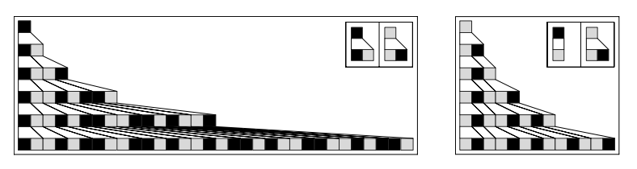
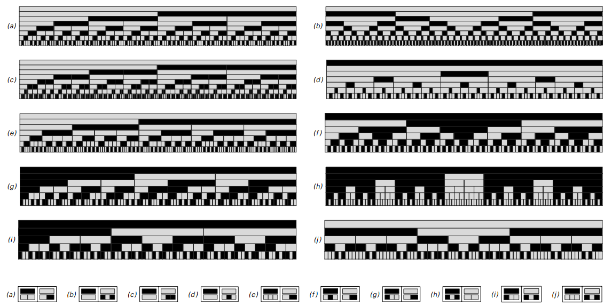
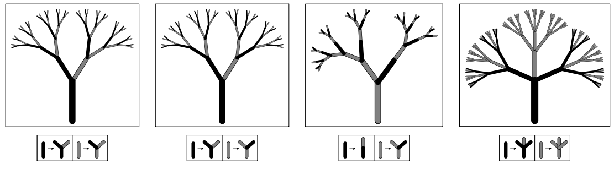
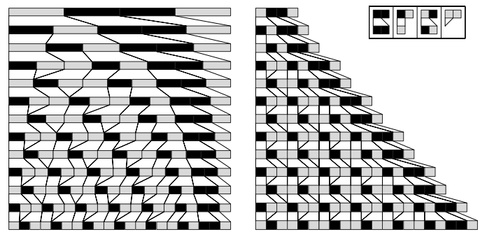
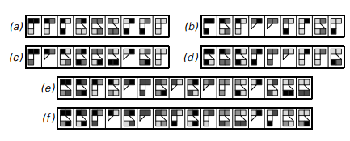
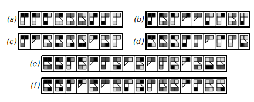

3.5 替换系统
元胞自动机、移动自动机和图灵机所共有的最重要的一个特征是在最底层由一系列固定的元胞组成。这意味着当无论这些元胞的颜色通过多大范围不同的规则更新，潜在的元胞数量和组织都保持不变。
然而，替换系统设置的元素的数量是可变的。一个典型的案例如下，它含有一系列的元素——每一个是白色或者黑色——每一步将之前的元素替代为新的元素块。
简单的例子中，规则表示着每个特定颜色的元素应该被固定的几个元素块所替代，并且独立于其近邻的颜色。

替换系统的例子。这个系统有两种可能的元素，每一步都被固定的新元素块所替代。第一次演示这个案例时，元素的总数在每一步翻倍，它遵循斐波那契数列，每一步的增长因子大概是(1+√5)/2≈1.618。这里演示的两种增长系统和下一页第三第四个例子相符合。
由于这类规则，元素总数增长地相当快，所以图片很快变得相当笨重。但至少对于这类规则，我们可以考虑每一步的替换元素的尺寸不再相同，而是用更小的尺寸。
在下一页，从开始的一个简单的元素用一个长条形表示，然后每一步替换规则指定这个长条如何被划分得更短。
（p82）

替换系统的例子，每一步的元素都被划分成新元素。在所有情况中，得到的整个模式能够看出一种非常规则的嵌套形式。规则b给出了所谓的Thue-Morse序列，我们会遇到很多次。c和斐波那契数列相关。d给出了一个康托尔集的版本。
下一页顶部的图演示了一些例子。我们能看到的就是模式产生的明显的规律性。如果仔细看，会发现每个模式由一系列相同嵌套的碎片组成。
最终结果并不意外。毕竟，替换系统的基本规则规定任何时候相同元素颜色出现时，都会以同样的方式被划分。
嵌套结构不用长条表示，而是用树枝的形式表示的话会更清晰。根据这个想法，从树干开始，应用替换系统，每一次决定每个树枝如何划分成更小的树枝。
（p83）
 更多的替换系统的例子。每一个规则产生不同的序列元素，但最终都变成了简单的嵌套形式。
关键是因为规则只依赖于特定树枝的颜色，而不是临近树枝的颜色，从树枝生成的子树必须有相同的结构，就像下图所示。
 前一页的替换系统的演进，但用树的形式演示。从最底部的树干开始，规则规定每一步的树干颜色应该以同样的方式划分成更小的树枝。结果是每棵树都由更小的相同结构的子树组成。在400页我们会用相似的系统讨论实际的树和树叶。
（p84）
要得到比嵌套模式更复杂的行为，我们要考虑让替换系统的规则不只依赖于单个元素的颜色，而至少包含一个其近邻的颜色。下面的图演示例子的规则，替代规则不仅依赖其本身颜色，也包括其右侧的元素颜色。
 一个颜色依赖自身颜色和右近邻颜色的替代系统。这种规则不能简单地当做是对元素的划分，在图中没有明显的长条尺寸用来选择。我这里做的是在每一步简单地平均划分。注意每一步的最右元素都是不变的，因为没有规则说如何替代它。
一个颜色依赖自身颜色和右近邻颜色的替代系统。这种规则不能简单地当做是对元素的划分，在图中没有明显的长条尺寸用来选择。我这里做的是在每一步简单地平均划分。注意每一步的最右元素都是不变的，因为没有规则说如何替代它。
在第一个例子中，获得的模式是嵌套结构。但是在第二个例子中，行为更加复杂了，没有明显的嵌套结构。
然而两个例子的一个共同特点是元素的总数从未减少。原因是我们指定的基本规则是每一个元素都至少会被一个新元素替代。
（p85）
当然，也可以考虑一种元素能够消失的替代系统。如果这种消失率太高，任何模式都会快速消亡。如果消失率太低，模式就会快速增长。
但也有一小部分规则元素的创造和析构相当平衡。  两种同时破坏和创造的替代系统。左边采用的是比例变化，整体尺寸保持一致。右边是让每个元素保持固定尺寸，就像82页的图一样。右边元素的破坏创造相当平衡，每一步只增长一个固定的数量。
上图演示了两个例子。元素的数量在不断增加，但是每一步都是固定的数目。在这种缓慢的增长下，我们在此将每个元素用一个固定尺寸的格子代替，就像82页一样。
当我们以这种形式查看时，替代系统展示的模式是简单重复的形式。结果表明，在相同类型的的替代系统中，所有增长缓慢的系统只能产生这种简单重复的模式。
知道这个后，我们可能会总结认为替代系统不能产生像元胞自动机那样的复杂性。但就像移动自动机和图灵机那样，我们再次想错了。事实上，就像下面的图演示的，允许三到四种颜色立即显示出了复杂的行为。
（p86）
 
每种元素有三到四种可能颜色的替代系统。这些特定规则是使得元素总数缓慢增长的。注意每一行的图，只有元素的序列是很重要的，像图中，一个特定元素在当增加或者消去一个元素时可能会改变其位置。注意a中的模式是重复的，b是一种嵌套结构。

每种元素有三到四种可能颜色的替代系统。这些特定规则是使得元素总数缓慢增长的。注意每一行的图，只有元素的序列是很重要的，像图中，一个特定元素在当增加或者消去一个元素时可能会改变其位置。注意a中的模式是重复的，b是一种嵌套结构。
（p87）
结果，第一个替代系统工作得完全像一个元胞自动机。其实，从右边缘看，所有的元素都像在一个正常的网格上，每一个元素的颜色取决于前一个和右边的颜色。
第二个替代系统再次拥有表现出正常网格状的补丁。但在这些补丁之间，有部分区域在销毁和重建。在其他替代系统所示的中，元素始终在销毁重建，没有留下任何简单的网格结构。所以我们最后得到的看起来就像元胞自动机一样的随机。